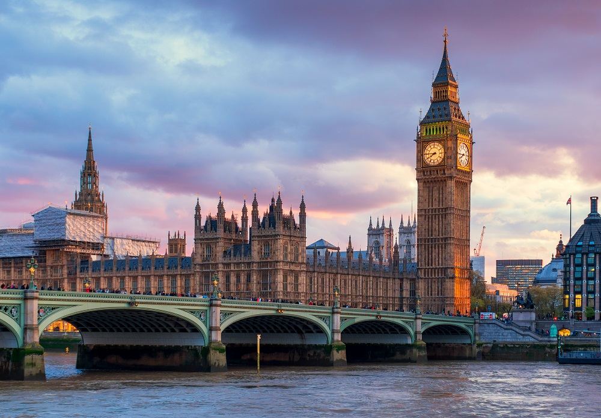
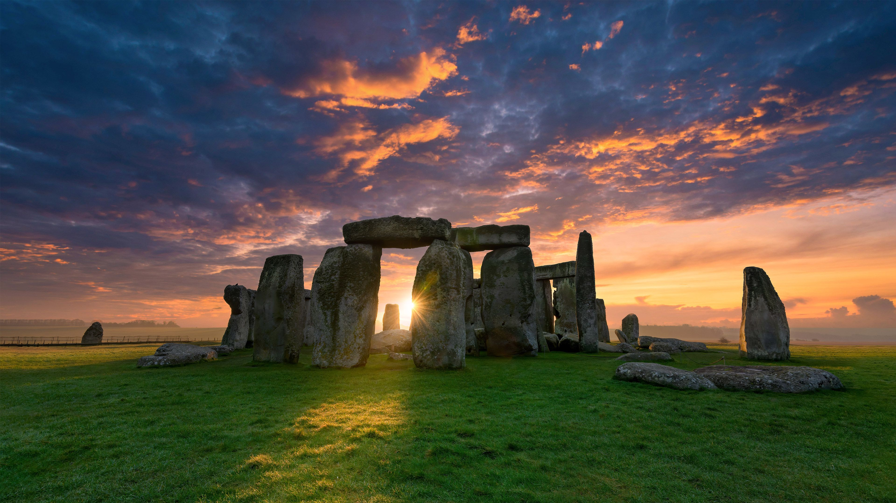

United Kingdom
About United Kingdom
The United Kingdom is a historic and diverse country, combining tradition and modernity, known for its monarchy, cultural influence, and global connections.
🗺️ Geography The UK is an island nation, surrounded by the Atlantic Ocean, the North Sea, the English Channel, and the Irish Sea. The country has mountains, hills, and rivers such as the Thames (in London) and the Severn. The weather is often mild but changeable, with frequent rain.
 The United Kingdom is a fascinating country with a rich history and a vibrant culture. Did you know that the United Kingdom is made up of four distinct nations: England, Scotland, Wales, and Northern Ireland? Each of these nations has its own unique traditions, dialects, and customs.London, the capital, is one of the most visited cities in the world, famous for iconic landmarks such as Big Ben and Buckingham Palace.
The United Kingdom also has a global influence in music, literature, and sport. The Beatles, Harry Potter, and English football are examples of this influence. Get ready to discover 35 astonishing facts about this incredible country! if you want more information about United Kingdom: https://en.wikipedia.org/wiki/United_Kingdom
Country Characteristics
| Characteristics | Details |
|---|---|
| Continent | Out Europe (Brexit 31 janvier 2020) |
| Capital | London |
| population | 68,400,000 (2023), about 282 inhabitants per km² |
| Area | Approximately 243,610 km² |
| Official Language | English |
| Currency | Pound Sterling (£) |
| Known for | London is famous for its monuments |
Famous monuments
-
Stonehenge
 -
Buckingham Palace

-
Big Ben